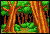
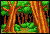

Upon starting the game, the player's current map is randomly chosen from a roulette that plays when the board is loaded, which stops when the player presses the A button to launch the ball and start the game. From there, the player can travel to another map by fulfilling certain conditions. Which map the player travels to is predictable, but oddly complex; this page contains my attempt to explain the mechanics.
On the Ruby field, there are two Linoone whose heads are barely visible on opposite sides of the board, just above the bottom lanes. When the ball hits the button under Chikorita, Chikorita will use Razor Leaf, hitting both Linoone and causing both to extend their bodies into the field. When hit by a single Razor Leaf, each Linoone will first extend, then retract, then extend one more time, giving the player two chances to hit them while they are extended. When either Linoone is hit, both will retract, and the Chikorita button will need to be hit again. Hitting the left Linoone while it is extended will cause a Gulpin to appear next to it. If the player manages to assemble three Gulpin, Travel Mode will be activated.
On the Sapphire Field, there are two buttons on opposite sides of the board, just above the bottom lanes. When the left one is hit, a Seedot will fall into the basket next to the button. If Travel Mode is not activated quickly, the Seedot will leave the board after a short period of time, requiring the player to hit the button more times. Getting three Seedot into the basket at once will activate Travel Mode.
On both fields, once Travel Mode is activated, the player has one minute to make a loop around the outer loop. Which direction the ball travels (left loop or right loop) affects which map the player goes to. Once the loop has been completed, the hole at the center of the board opens. If the player gets the ball in the hole before time is up, they have the option to travel or stay where they are.
The Ruins is a special area, available on both fields, that can only be accessed by Traveling six times. On the sixth Travel, the Ruins will automatically be entered. The Ruins is the only place to get Beldum, the three Regi's, and Jirachi, making it a requirement for completing the Pokédex. The Ruins can be Traveled to multiple times in one game: once the player leaves the Ruins, the next map they enter is considered to be their first Travel, and on their sixth, they will return to the Ruins.
Aside from the Ruins, there are six map options available on each board. For the purposes of Traveling, they are considered to be ordered as in the sequence below:
| Ruby |

|
|
|
|
|
|
| Forest | Volcano | Plains | Harbor | Safari Zone | Cave | |
| Sapphire |
|
|
|
|
|
|
| Forest | Lake | Plains | Desert | Beach | Cave |
When the player first starts a pinball game, a random map will be selected based on the roulette. Once the map is chosen, the game will make pairs of maps based on this starting map, and starting from the map to the right of the one the player starts on. For instance, on the Ruby field, if the player starts on the Plains, the game will make the pairs Harbor/Safari Zone, Cave/Forest, and Volcano/Plains. On the Sapphire board, if the player starts in the Forest, the pairs are instead Lake/Plains, Desert/Beach, and Cave/Forest. As these pairs are determined entirely by the starting map, there is no way to change the pairs within a single game of pinball.
When the player goes to Travel, regardless of what map they are currently on, the next map will always be taken from one of the two maps in the next pair in the sequence. For instance, if the Ruby player that started on the Plains goes to Travel, their first map will always be one of the Harbor/Safari Zone pair, their second will always be one of the Cave/Forest pair, and their third will always be one of the Volcano/Plains pair. After the third pair, the sequence repeats from the beginning.
Which map of the pair the player Travels to is dependent on whether the player makes a left or right loop during Travel Mode. If the left loop is taken, the first map in the pair will be used; if the right loop is taken, the second will be used.
The Ruins, being that it is accessed specially and isn't part of the paired maps, acts a little different. On the sixth Travel, the player will move to the Ruins, but the Ruins is basically inserted into the pair sequence. For example, consider the Sapphire player that started on the Forest. Below are the map pairs they will travel to: